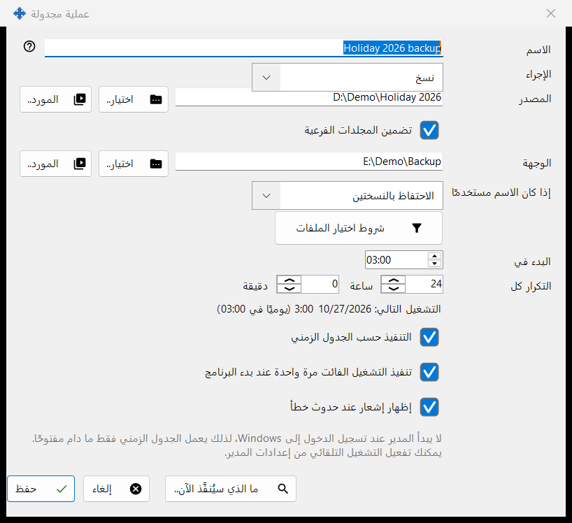
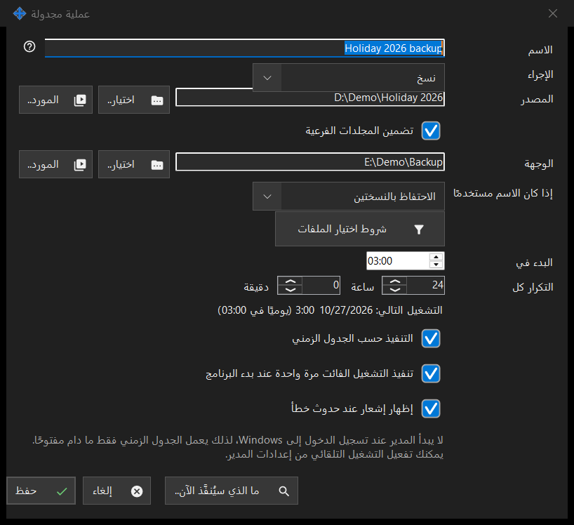

عملية مجدولة
الغرض من هذه النافذة
تحرّر عملية ملفات مجدولة واحدة: نسخ الملفات أو نقلها أو حذفها أو أرشفتها من مصدر إلى وجهة وفق جدول متكرر. تُفتح من الزرين جديدة.. وتعديل.. في صفحة عمليات الملفات المجدولة بإعدادات Share Manager، ومن عنصر قائمة مجلد العارض جدولة عملية لهذا المجلد.. الذي يملأ ذلك المجلد مصدرًا.


بهذا الترتيب
- أدخل الاسم واختر الإجراء.
- حدّد المصدر، والوجهة للنسخ والنقل والأرشفة، بالأزرار اختيار.. أو المورد.. أو عبر Google Drive.
- للنسخ والنقل اختر ما يحدث إذا كان الاسم مستخدمًا.
- افتح شروط اختيار الملفات لتضييق الملفات.
- اضبط البدء في والتكرار كل، وأبقِ التنفيذ حسب الجدول الزمني محددًا.
- افحص ما الذي سيُنفَّذ الآن.. ثم اضغط حفظ.
عناصر النافذة
الإجراء وتعارض الأسماء
الإجراء هو نسخ أو نقل أو حذف أو أرشفة، وتعرض النافذة الصفوف التي يحتاجها ذلك الإجراء فقط: لا وجهة للحذف؛ ويظهر إذا كان الاسم مستخدمًا (تخطي، استبدال، الاحتفاظ بالنسختين) للنسخ والنقل فقط؛ ويظهر حذف الملفات الأصلية بعد التحقق من الأرشيف للأرشفة فقط، ولا يزيل الأصول إلا بعد قراءة الأرشيف مجددًا وفحصه.
المصدر والوجهة
اكتب مسارًا كاملًا أو اضغط اختيار.. أما المورد.. فيختار خادم SFTP أو مجلد شبكة من قائمة موارد العارض، ولا يُعرض للأرشفة التي تقبل المجلدات العادية وGoogle Drive فقط. يظهر عبر Google Drive فقط عندما تكون مسجّل الدخول إلى Drive أو يستخدمه ذلك الجانب بالفعل. وعندما يكون تضمين المجلدات الفرعية غير محدد تُعالَج ملفات مجلد المصدر نفسه فقط. يرفض حفظ المجلدات النظامية ومجلدات البرامج، ووجهة تساوي المصدر أو تقع داخله، ويذكر الخطأ.
حذف الملفات
عندما ستُزال ملفات (الحذف، أو الأرشفة مع خيار حذف الأصول)، يبيّن السطر حذف: .. أين تذهب: إلى سلة المحذوفات، أو نهائيًا مع ذكر السبب، مثل أن القرص الشبكي أو القابل للإزالة لا يملك سلة محذوفات. في مثل هذه العملية لا يحفظ Enter؛ اضغط حفظ عن قصد. لا تطرح العملية المجدولة أي أسئلة، وتسجّل أين ذهبت الملفات المحذوفة.
شروط اختيار الملفات
تُفتح اللوحة تلقائيًا عندما تختلف الشروط عن الافتراضية. أنواع الملفات: كل الملفات، الصور، صوت، فيديو، المستندات (كل الملفات يعطّل الأربعة الأخرى). تاريخ التعديل: كل الأوقات، الجديد منذ آخر تشغيل، آخر ساعة، آخر 24 ساعة. يقبل نمط الاسم واستبعاد حسب النمط عدة أنماط تفصل بينها فاصلة منقوطة (;)، مثل *.jpg;IMG_??.png، وتُقارَن بالاسم الكامل للملف. أقدم من وأحدث من بالأيام والساعات، والحجم أكبر من والحجم أصغر من بالميغابايت. وتضمين الملفات المخفية وملفات النظام غير محدد افتراضيًا.
الجدول الزمني
يحدد البدء في وقت اليوم، ويحدد التكرار كل الفاصل بالساعات والدقائق؛ وعدد صحيح من الأيام يتكرر في الوقت نفسه. يعرض السطر تحتهما التشغيل التالي: الوقت (القاعدة)، أو الجدول الزمني معطّل: تُنفَّذ العملية يدويًا فقط. تنفيذ التشغيل الفائت مرة واحدة عند بدء البرنامج وإظهار إشعار عند حدوث خطأ خياران منفصلان. ويذكر سطر آخر أن الجدول الزمني يعمل فقط أثناء تشغيل Share Manager، وهل يبدأ عند تسجيل الدخول إلى Windows؛ ولا شيء في هذه النافذة يغيّر البدء التلقائي.
المعاينة والحفظ
الزر ما الذي سيُنفَّذ الآن.. يسرد الملفات التي ستعالجها العملية ولا يغيّر شيئًا؛ والتشغيل لا يحتاج إليه. يخزّن حفظ العملية، أو يسرد ما يجب إصلاحه. أما إلغاء فيتجاهل تعديلاتك.